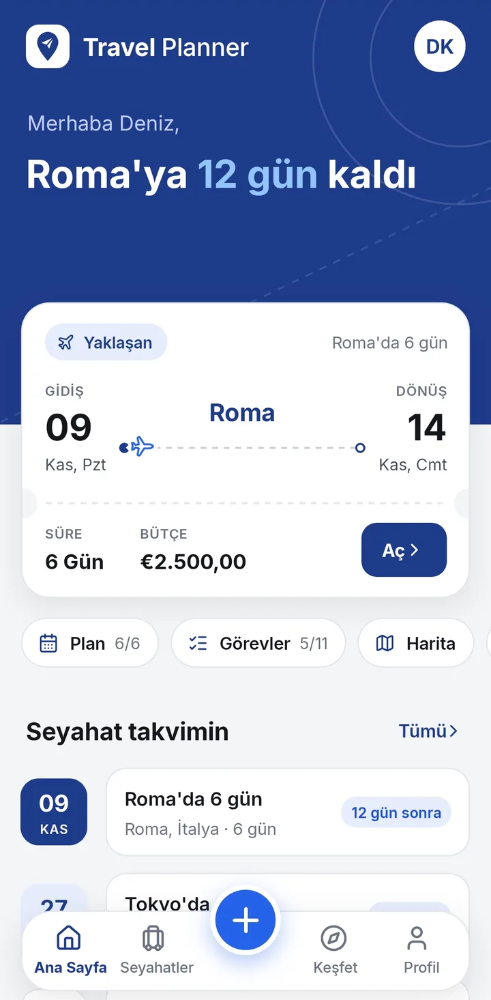
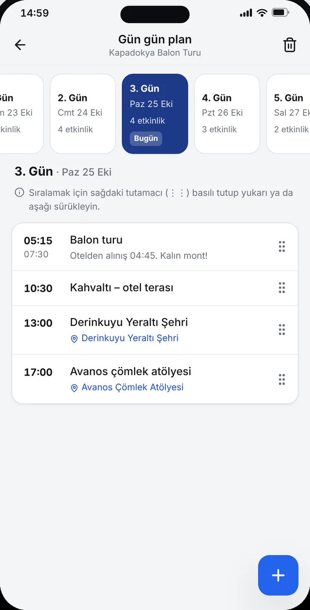
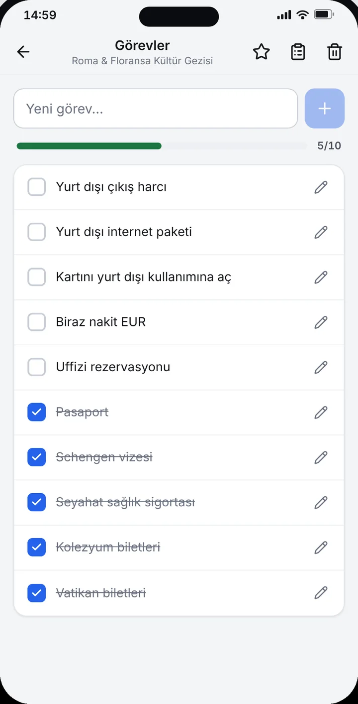
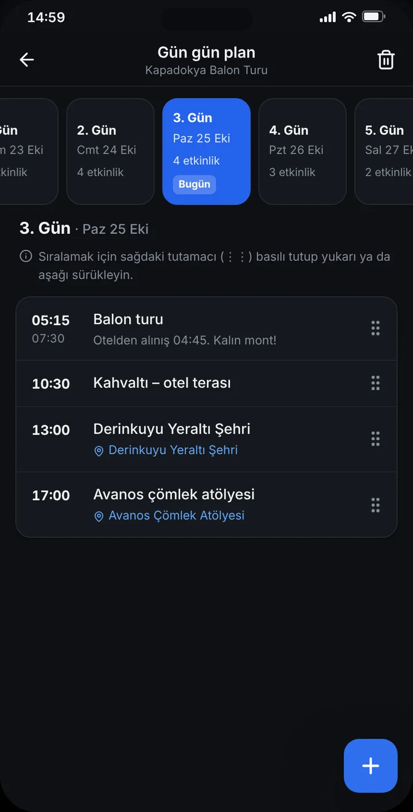

Gün gün plan
Etkinlikleri gününe ve saatine yerleştir, sürükleyip yeniden sırala.
Android için ücretsiz · Reklamsız
Gün gün plan, harita, hava durumu, bütçe ve harcama bölüşme tek uygulamada. Planını kendin kur, yapay zekâya hazırlat ya da Keşfet’teki hazır rotalardan başla.


Özellikler
Seyahat öncesi, sırası ve sonrası için ihtiyacın olan araçlar tek yerde.
Etkinlikleri gününe ve saatine yerleştir, sürükleyip yeniden sırala.
Kayıtlı yerleri ve günün rotasını haritada gör, tek dokunuşla yol tarifi al.
Şehrin anlık havası ve seyahatin her günü için tahmin.
Hava, süre ve plana göre öneriler; görevler ve bavul şablonları.
Farklı dövizle gir, seyahatin para birimine otomatik çevrilsin.
Kategori dağılımı, günlük harcama ve bütçe uyarıları.
Kimin ne ödediğini gir, kimin kime ne kadar borçlu olduğunu gör.
Arkadaşlarını davet koduyla ekle, düzenleyici ya da görüntüleyici yap.
Birkaç soruyu yanıtla, gün gün rota önerisi hazır olsun.
Hazır seyahat planlarını incele, tek dokunuşla kendi seyahatine ekle.
Bilet, rezervasyon ve fotoğrafları seyahate ekle; internetsiz aç.
Hazırlık ve günün planı hatırlatmaları; tüm verini tek dosyaya yedekle.
Plan
Uçuş, otel girişi, gezi ve akşam yemeği. Her etkinliği gününe yerleştir, kayıtlı yerlerle eşleştir; seyahat sırasında “Bugün” kartı sıradakini gösterir.


Bütçe
Seyahat bütçeni belirle, harcamalarını gir. Ne kadar harcadığını, ne kadar kaldığını ve arkadaşlarınla hesabın nasıl kapanacağını uygulama hesaplasın.


Yapay zekâ ve Keşfet
İlgi alanını, temponu ve bütçeni seç; yapay zekâ gün gün bir rota önersin. Önerilen yerler haritada doğrulanır, istediklerini seçip planına eklersin. Ya da Keşfet’teki hazır planlardan birini kendi seyahatine dönüştür.
Yapay zekâ önerileri hatalı olabilir. Ayrıntılar: Yapay Zekâ Feragatnamesi.


Ekranlar
Sade, okunaklı ekranlar. Açık ve koyu temada aynı netlik.






Nasıl çalışır?
Şehri, tarihleri ve bütçeyi gir. İstersen kapak fotoğrafı ekle.
Günleri kendin doldur, yapay zekâya hazırlat ya da Keşfet’ten hazır plan ekle.
Arkadaşlarını davet et, harcamaları birlikte gir, hesabı uygulama kapatsın.
Gizlilik
Hesap açmadan kullanabilirsin. Hesap açarsan verilerin yalnızca eşitleme ve paylaşım için Avrupa Birliği’ndeki sunucularda saklanır.
SSS
Aradığını bulamadın mı? emrullahakkus@gmail.com adresine yaz; genellikle birkaç iş günü içinde dönüyoruz.
Hayır. Travel Planner ücretsizdir; uygulamada reklam, abonelik ya da uygulama içi satın alma yoktur.
Hayır. Misafir olarak kullanabilirsin; bu durumda veriler yalnızca cihazında kalır. Hesap; cihazlar arası eşitleme, seyahat paylaşımı ve yapay zekâ ile planlama için gerekir.
Evet. Plan, harcamalar, görevler ve eklediğin belgeler internetsiz açılır. Hava durumu, harita, yer arama, döviz kuru ve yapay zekâ internet ister; hesaplı kullanımda yaptığın değişiklikler bağlantı gelince eşitlenir.
Plan hakkın sınırlıdır; kaç hakkın kaldığını ve ne zaman yenileneceğini plan ekranında görürsün. Bir plan oluşturulamazsa hakkın geri verilir. Hazır planlar telefonunda kalır ve tekrar açmak ücretsizdir.
Uygulama henüz mağazalarda yayınlanmadı. Bu dönemde Android sürümünü yalnızca bu siteden APK dosyası olarak indirebilirsin. Mağaza sürümü yayınlandığında bu sayfada duyurulacak.
iOS sürümü planlanıyor, henüz kesin bir tarih yok. Hazır olduğunda App Store bağlantısı bu sayfaya eklenecek.
APK’yı yalnızca bu sitedeki resmi bağlantıdan indir. Başka sitelerde, gruplarda veya mesajlaşma uygulamalarında paylaşılan kopyalar değiştirilmiş olabilir.
APK sürümü kendiliğinden güncellenmez. Yeni sürüm çıktığında bu siteden indirip mevcut uygulamanın üzerine kurman yeterli; verilerin korunur. Güncellemeden önce Profil → Yedekleme → Yedek al ile yedek almanı öneririz.
Uygulamada Profil → Hesabımı sil ile hesabını ve bulut verilerini silebilirsin. Uygulamaya erişemiyorsan Hesap ve veri silme sayfasındaki e-posta yöntemini kullan.
Android sürümünü hemen indir, ilk seyahatini birkaç dakikada oluştur. iPhone sürümü yolda.
Bu bir önizleme sürümüdür; hatalar içerebilir. Uygulamayı kullanarak Kullanım Koşulları’nı kabul etmiş olursun; verilerinin nasıl işlendiği Gizlilik Politikası ve KVKK Aydınlatma Metni’nde anlatılır.